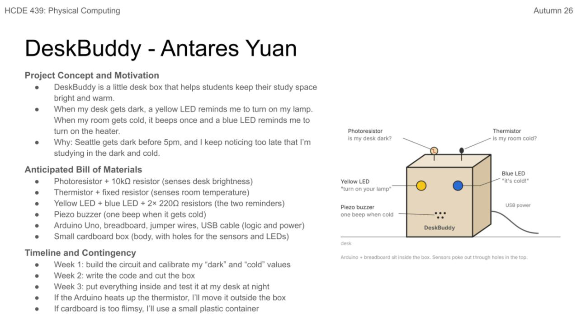
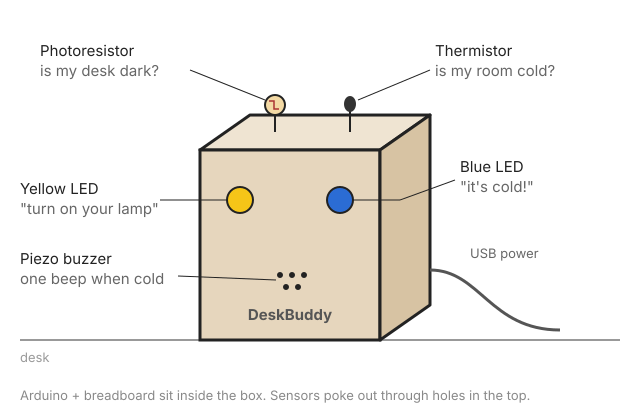

A little box that keeps your study corner bright and warm.

DeskBuddy is a little desk box that helps students keep their study space bright and warm. When my desk gets dark, a yellow LED reminds me to turn on my lamp. When my room gets cold, it beeps once and a blue LED reminds me to turn on the heater.
Why: Seattle gets dark before 5pm, and I keep noticing too late that I'm studying in the dark and cold.
